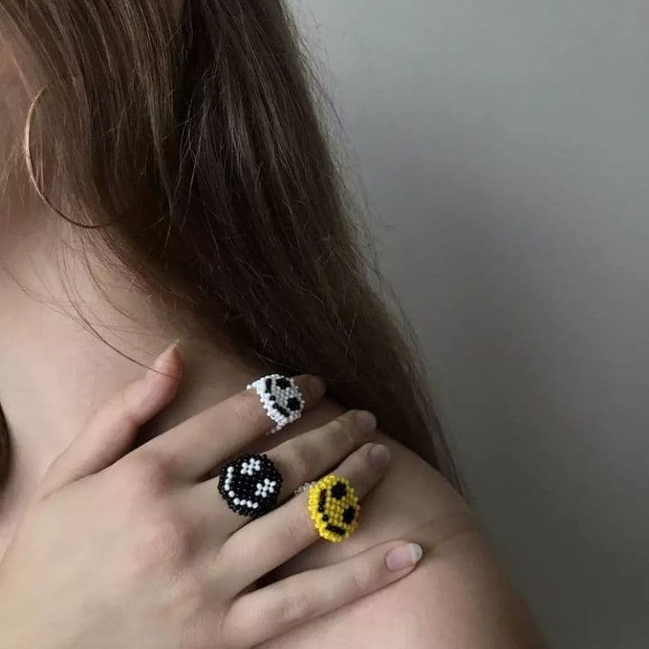
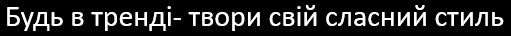

Як щодо смайликів?
⠀⠀
Подарунок — це ще одна можливість висловити свої почуття небайдужій людині. І прикраси є для цього ідеальним варіантом, адже щоразу, надягаючи їх, людина згадуватиме Вас⠀⠀
Якщо Ви давно задумувались над тим, що особливого можна подарувати другу, подрузі чи коханій людині, то ці каблучки-смайлики саме для Вас. Можливість підібрати ідеальний колір у поєднанні з актуальним дизайном роблять їх безумовно найкращим варіантом. І що підніме настрій більше, ніж щирі емоції близької людини?
⠀⠀
Будьте щасливі і даруйте усмішки
120 грн
